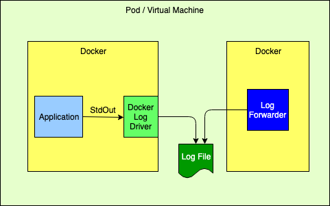
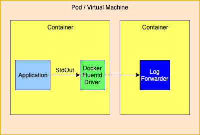
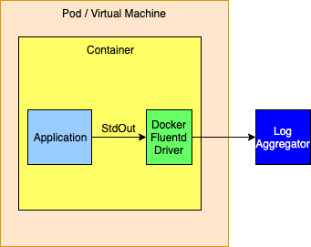
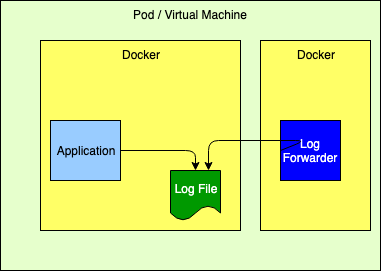
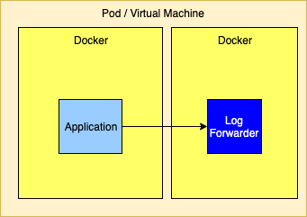
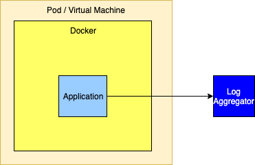

|
Using Log4j in Cloud Enabled ApplicationsThe Twelve-Factor ApplicationThe Logging Guidelines for The Twelve-Factor App state that all logs should be routed unbuffered to stdout. Since this is the least common denominator it is guaranteed to work for all applications. Howeever, as with any set of general guidelines, choosing the least common denominator approach comes at a cost. Some of the costs in Java applications include:
Logging ApproachesAll the solutions discussed on this page are predicated with the idea that log files cannot permanently reside on the file system and that all log events should be routed to one or more log analysis tools that will be used for reporting and alerting. There are many ways to forward and collect events to be sent to the log analysis tools. Note that any approach that bypasses Docker’s logging drivers requires Log4j’s Docker Loookup to allow Docker attributes to be injected into the log events. Logging to the Standard Output StreamAs discussed above, this is the recommended 12-Factor approach for applications running in a docker container. The Log4j team does not recommend this approach if exceptions will be logged by the Java application.  Logging to the Standard Output Stream with the Docker Fluentd Logging DriverDocker provides alternate logging drivers, such as gelf or fluentd, that can be used to redirect the standard output stream to a log forwarder or log aggregator. When routing to a log forwarder it is expected that the forwarder will have the same lifetime as the application. If the forwarder should fail the management tools would be expected to also terminate other containers dependent on the forwarder.  As an alternative the logging drivers could be configured to route events directly to a logging aggregator. This is generally not a good idea as the logging drivers only allow a single host and port to be configured. The docker documentation isn’t clear but infers that log events will be dropped when log events cannot be delivered so this method should not be used if a highly available solution is required.  Logging to a FileWhile this is not the recommended 12-Factor approach, it performs very well. However, it requires that the application declare a volume where the log files will reside and then configure the log forwarder to tail those files. Care must also be taken to automatically manage the disk space used for the logs, which Log4j can perform via the Delete action on the RollingFileAppender.  Sending Directly to a Log Forwarder via TCPSending logs directly to a Log Forwarder is simple as it generally just requires that the forwarder’s host and port be configured on a SocketAppender with an appropriate layout.  Sending Directly to a Log Aggregator via TCPSimilar to sending logs to a forwarder, logs can also be sent to a cluster of aggregators. However, setting this up is not as simple since, to be highly available, a cluster of aggregators must be used. However, the SocketAppender currently can only be configured with a single host and port. To allow for failover if the primary aggregator fails the SocketAppender must be enclosed in a FailoverAppender, which would also have the secondary aggregator configured. Another option is to have the SocketAppender point to a highly available proxy that can forward to the Log Aggregator. If the log aggregator used is Apache Flume or Apache Kafka (or similar) the Appenders for these support being configured with a list of hosts and ports so high availability is not an issue.  Managing Logging ConfigurationSpring Boot provides another least common denominator approach to logging configuration. It will let you set the log level for various Loggers within an application which can be dynamically updated via REST endpoints provided by Spring. While this works in a lot of cases it does not support any of the more advanced filtering featurs of Log4j. For example, since it cannot add or modify any Filters other than the log level of a logger, changes cannot be made to allow all log events for a specific user or customer to temporarily be logged (see DynamicThresholdFilter or ThreadContextMapFilter) or any other kinds of changes to filters. Also, in a micro-services, clustered environment it is quite likely that these changes will need to be propagated to multiple servers at the same time. Trying to achieve this via REST calls could be difficult. Since its first release Log4j has supported reconfiguration through a file. Beginning with Log4j 2.12.0 Log4j also supports accessing the configuration via HTTP(S) and monitoring the file for changes by using the HTTP “If-Modified-Since” header. A patch has also been integrated into Spring Cloud Config starting with versions 2.0.3 and 2.1.1 for it to honor the If-Modified-Since header. In addition, the log4j-spring-cloud-config project will listen for update events published by Spring Cloud Bus and then verify that the configuratoin file has been modified, so polling via HTTP is not required. Log4j also supports composite configurations. A distributed application spread across microservices could share a common configuration file that could be used to control things like enabling debug logging for a specific user. While the standard Spring Boot REST endpoints to update logging will still work any changes made by those REST endpoints will be lost if Log4j reconfigures itself do to changes in the logging configuration file. Further information regarding integration of the log4j-spring-cloud-config-client can be found at Log4j Spring Cloud Config Client. Integration with DockerApplications within a Docker container that log using a Docker logging driver can include special attributes in the formatted log event as described at Customize Log Driver Output. Log4j provides similar functionality via the Docker Loookup. More information on Log4j’s Docker support may also be found at Log4j-Docker. Appender PerformanceThe numbers in the table below represent how much time in seceonds was required for the application to call logger.debug 100,000 times. These numbers only include the time taken to deliver to the specifcly noted endpoint and many not include the actual time required before they are availble for viewing. All measurements were performed on a MacBook Pro with a 2.9GHz Intel Core I9 processor with 6 physical and 12 logical cores, 32GB of 2400 MHz DDR4 RAM, and 1TB of Apple SSD storage. The VM used by Docker was managed by VMWare Fusion and had 4 CPUs and 2 GB of RAM. These number should be used for relative perfomance comparisons as the results on another system may vary considerably. The sample application used can be found under the log4j-spring-cloud-config/log4j-spring-cloud-config-samples directory in the Log4j source repository.
Notes:
Logging Recommendations
|
||||||||||||||||||||||||||||||||||||||||||||||||||||||||||||||||||||||||||||||||||||||||||||||||||||||||||||||||||||||||||||||||||